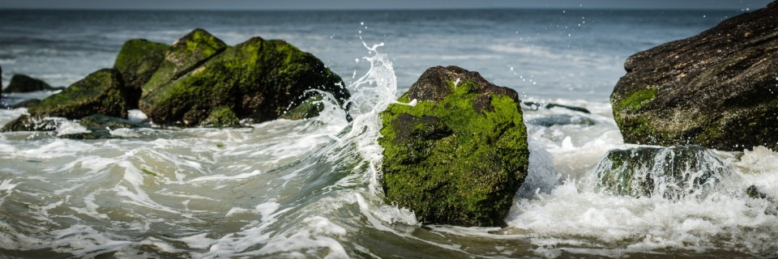

Panoramic Photography
Panoramic photography, also known as wide format photography, is a special technique that stitches multiple images from the same camera together to form a single, wide photograph (vertical or horizontal). The term “panorama” literally means “all sight” in Greek and it first originated from painters that wanted to capture a wide view of a landscape, not just a certain part of it.
The first panoramic photographs were made by simply aligning printed versions of film, which did not turn out very well, because it was close to impossible to perfectly align photographs. With the invention of personal computing, advancements in computer software and digital photography, it is now much easier to stitch digital images together using specialized software. In fact, using a proper photography technique and panoramic equipment, it is now possible to create near-perfect panoramas at extremely high resolutions. Some photographers even stitch hundreds of high resolution images to create gargantuan “gigapixel” panoramas.
Today, digital panoramic photography is quite popular and common not only among landscape photographers, but also among architectural and cityscape photographers.
A panorama is a combined set of individual photographs, in which two adjacent photographs have at least 20% overlapping areas. These two, or more, overlapping photographs are “stitched” with the help of software to produce extremely elongated fields of view. The overlapping is required as the software is able to understand the common areas in two adjacent photographs and hence can eliminate duplication of a scene by stitching the same into a single photograph.
Panoramic Photography can get quite complex and expensive, depending on what you are trying to do. For example, creating panoramic images in architectural photography requires camera and lens to be properly calibrated on special panoramic equipment to prevent curved lines, distortions and improper stitches of close objects. At the same time, you can successfully take great landscape panoramic images without investing on any camera equipment, as long as you know how to do it right.